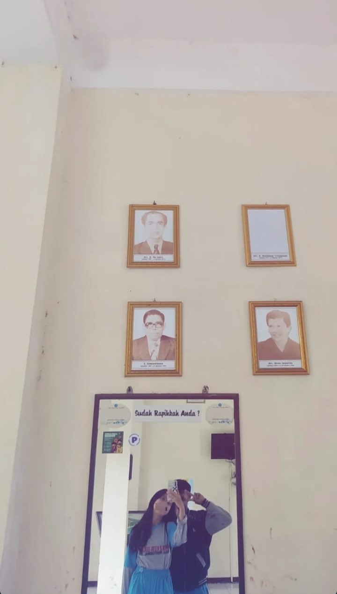
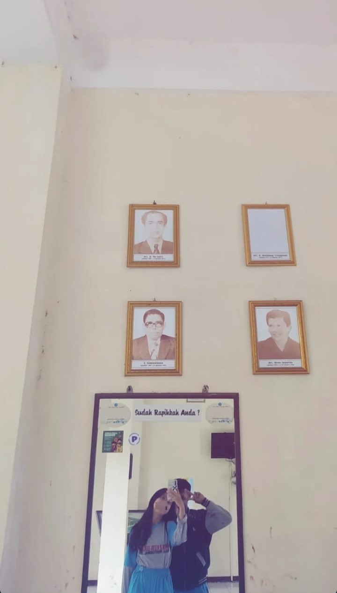

💖Maafin Aku Yaaaaa Levinaa Tersayangggggg 💖
Maapp kalooo seringg bikinnn hariii harii kamuuu jadiii gak seruuu...
"Maapppp yaaa cantikkkk kalooo bercandaa kamuuu badmood, tapiii akuuu janjiiii bakallll ngebatasinnn manaa bercandaa yanggg benerrr benerrr seruu tanpaa haruss bikinnn kamuuu badmood."
"Maappp jugaaa yaaa cantikkkkk kalooo seringg bikinnn kamuuu jadiii sebelll samaaa akuuu ."
"Maapp punyaaa cowok yang ngeselinnyaa bikinnnn gaaa seruuu ya, Sayangggggggggggg 😔"
 
